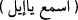

tarafına koydu. İbrâhîm, ayaklarını kabın üzerine bastı. Kadın önce onun başının sağ
tarafını sonra da sol tarafını yıkadı. Kabın üzerinde ayak izleri kaldı. İbrâhîm, kadına:
– Kocan geldiğinde ona selâm söyle ve evinin eşiğinin istikamet üzere olduğunu
bildir, dedi. İsmâîl eve döndüğünde kapıda babasının kokusunu aldı. Hanımına:
– Eve birisi mi geldi? diye sordu. Hanımı da:
– Evet, çok güzel yüzlü ve güzel kokulu yaşlı bir adam geldi. Başını yıkadım, işte bu
da ayaklarının izi, dedi.
Hz. İsmâîl: “O, babam İbrâhîm’di sen de kapımın eşiğisin, seni tutmamı emrediyor.”
dedi.
Bir müddet sonra İbrâhîm tekrar geldi. Bu sırada İsmâîl zemzem kuyusuna yakın
büyük bir gölgeliğin altında ok yapmakla meşguldü. İbrâhîm ona doğru yürüdü, hasretle
kucakladı ve “İsmâîl, Allah bana bir iş emretti, bu konuda bana yardımcı olur musun?”
dedi. İsmâîl: “Evet, yardım ederim,” cevâbını verdi. İbrâhîm: “Allah bana buraya bir
bina yapmamı emretti.” dedi. Birlikte Kâbe’nin temellerini yükseltmeye başladılar.
İsmâîl taş getiriyor, İbrâhîm (a.s.) de binayı yapıyordu. Bina yükseldiğinde İsmâîl bir
taş getirdi yere koydu. İbrâhîm o taşın üzerine çıktı ve binayı inşaya devam etti, bu
arada İsmâîl taş taşımaya devam ediyordu. Bu şekilde çalışırlarken bir yandan da: “Ya
Rabb! Kabul buyur muhakkak sen işiten ve bilensin.” (el-Bakara, 2/127) diyorlardı.
Bina tamamlandıktan sonra İbrâhîm’e: “İnsanları hacca çağır.” (Hac, 22/27) denildi.
İbrâhîm: “Etrafımda kimse yokken ve ben böyle dağlar arasındayken, nasıl çağırayım?”
dedi. Allah Teâlâ: “Çağırmak senden, bu çağrıyı insanlara ulaştırmak da bendendir.”
buyurdu.
İbrâhîm, Ebû Kubeys dağına tırmandı ve tufan günlerinde bu dağda gizli kalan
Haceru’l-Esved’in üzerine çıktı. Bu taş o an dünyâdaki tüm taşlardan daha yüksekti.
Allah tüm yeryüzünü, İbrâhîm (a.s.)’ın önünde kitap gibi dürüp bir araya getirdi. O da:
“Ey Müslümanlar! Rabbiniz sizin için bir beyt inşâ etti ve orayı haccetmenizi
emrediyor.” diye seslendi. İnsanlar bu dâvete âlem-i misâl’den; yâni babalarının
sulblerinden ya da annelerinin rahimlerinden icâbet ettiler. Bunlardan bir kere icâbette
bulunan, bir kere haccetti. On kere icâbette bulunan ise on kere haccetti. Hadis-i şerifte:
“Rükn ve makam, cennet yakutlarından birer yakuttur. Eğer müşriklerin eli bunlara
dokunmamış olsaydı, yeryüzünü doğudan batıya baştan başa aydınlatırdı.”[10]
buyurulmaktadır. Bunlardan murad Haceru’l-Esved ve Kâbe’yi bina ederken İbrâhîm
(a.s.)’ın ayağını bastığı taşdır.
“Biz, İbrâhîm ve İsmâîl’e; tavâf edenler, ibâdete kapananlar, rükû ve secde edenler
için evimi titizlikle temizleyin diye vasiyet ettik.”
İsmâîl’e bu adın verilmesinin sebebi şöyle rivâyet edilir: İbrâhîm (a.s.), Allah Teâlâ
Hazretleri’nden kendisine bir evlâd vermesi için duâ ve tazarrû’da bulunuyor ve:
“İsma’ yâ iyl” __WORD__ “İşit ey İyl” diye yalvarıp yakarıyordu. “İyl” İbrânîce’de